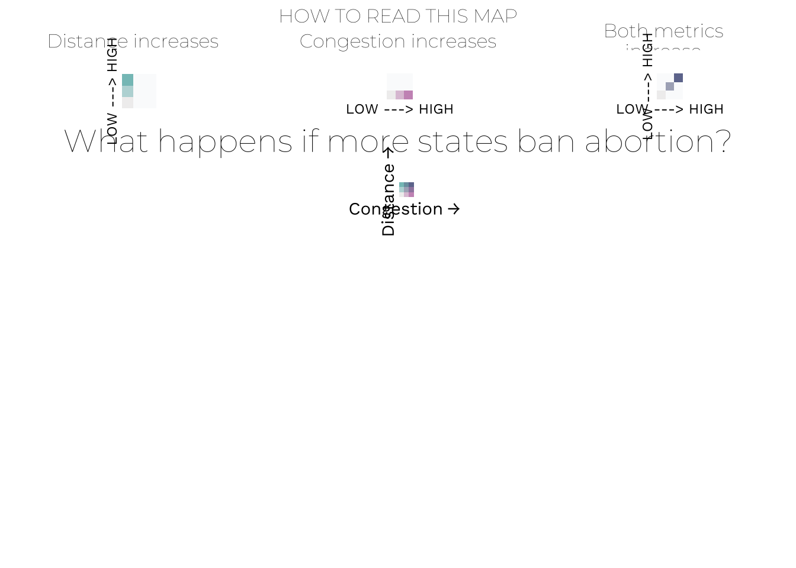
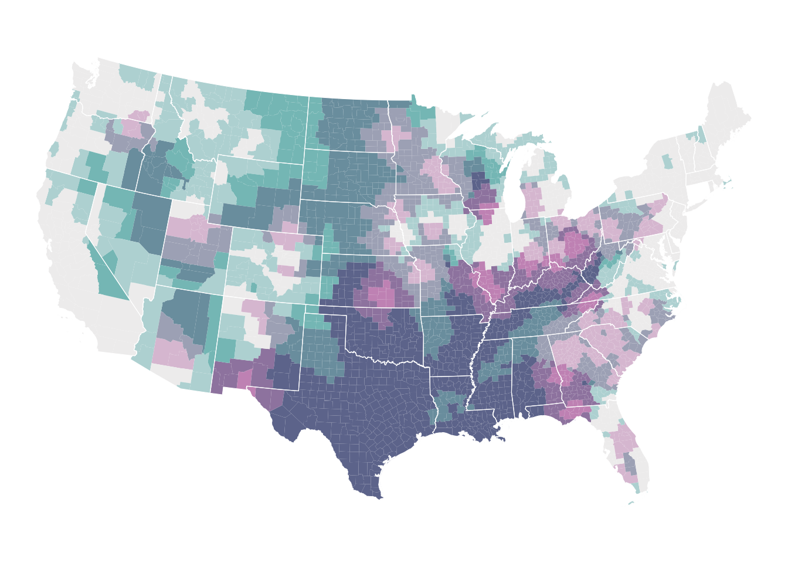
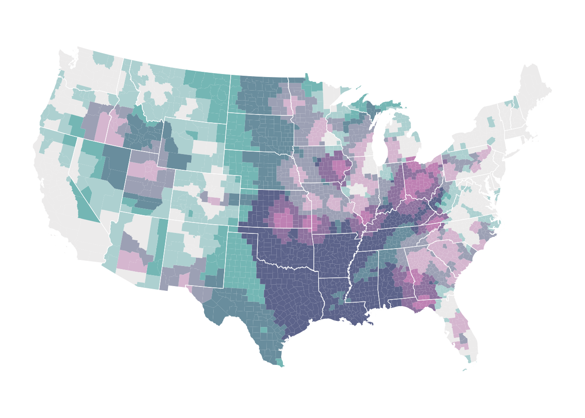
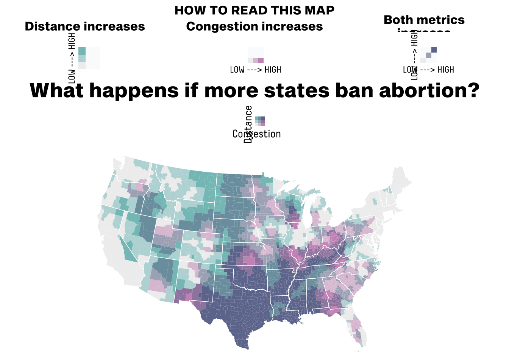
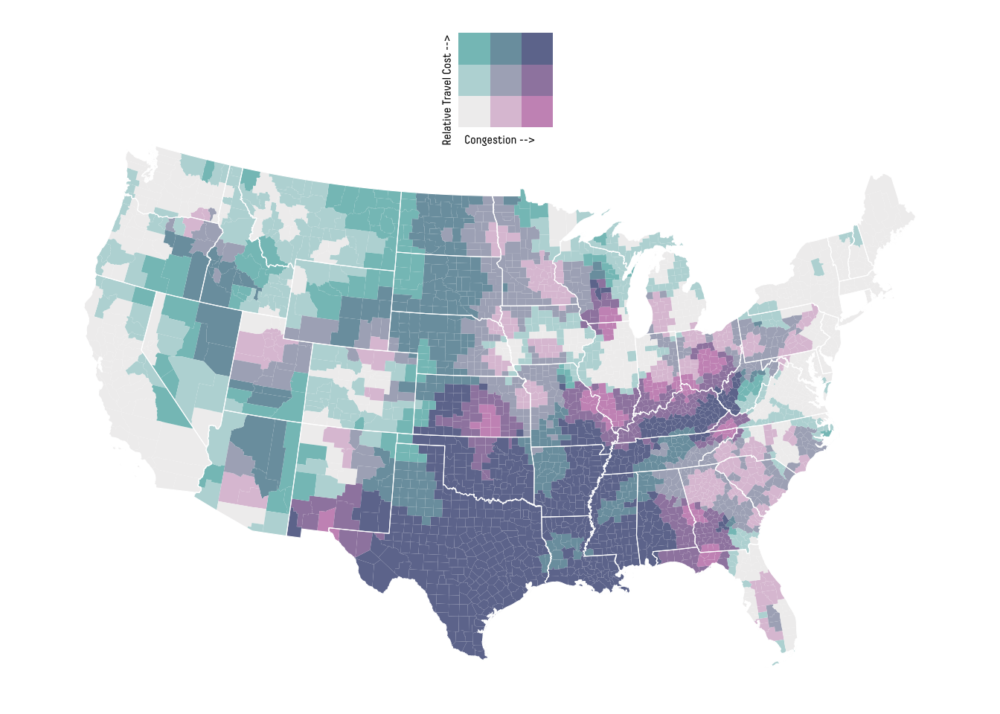

A visual look at how access to abortion clinics has changed across the United States since the overturning of Roe v. Wade.
Author
Clare McGarvey
Published
Invalid Date
Introduction
In June of 2022, the U.S. Supreme Court overturned the historic 1973 Roe v. Wade ruling, eliminating the constitutional right to abortion which had been protected for almost 50 years. The original Roe v. Wade ruling established a federally-mandated legislative framework minimum period where abortion is legal and a
This was a marked regression for women’s rights in the country, and stands as a point of right-wing turn
it is a point of both symbolic and real triumph for the right-wing. It shows the direction and the magnitude of which the legislative system had been impacted by the political agenda and the rising polarisation and conservatism in the country.
Roe v. Wade was ruled on in 1973 and made unduly restrictive state regulation of abortion unconstitutional. The court used notions of trimesters and fetal viability (the feasibility of life outside of the mother’s womb) to inform their decision.
“The Roe decision imposed a federally mandated uniform framework for state legislation on the subject. It also established a minimal period during which abortion is legal, with more or fewer restrictions throughout the pregnancy.”
The visualisation captures the effect the overturn, focusing on the distance and “congestion”, or how many women each clinic has to service, as metrics for access. It was produced by ___ and ___ for the article ‘What Happens If North Carolina Bans Abortion? Or Ohio? Or Florida?’, published on the 8th of March 2023 by political analysis website FiveThirtyEight. The article stipulated on how access to abortion would continue to change after the overturning of Roe v. Wade in June of the prior year. At the time of publish, Utah had just announced they would ban abortions and Florida and other Republican-controlled states were looking like they may follow suit. The article produced a well-developed interactive graphic that depicted the current state of abortion access and how it would change if different states were to follow in Utah’s footsteps. Certain states restricting abortion access could add ___ of miles to the nearest clinic, forcing people to drive across multiple states.
two related metrics of access / which are closely related dimensions of access.
On the 8th of March 2023, Aaron Bycoffe, Maggie Koerth, Elena Mejía and Amelia Thomson-DeVeaux published ‘What Happens If North Carolina Bans Abortion? Or Ohio? Or Florida?’ on American political analysis website FiveThirtyEight. The article stipulated on how access to abortion would continue to change after the overturning of Roe v. Wade in June of the prior year, which revoked the constitutional right to abortion and shifted abortion legislation to state control. At the time of publish, Utah had just announced they would ban abortions and Florida and other Republican-controlled states were looking like they may follow suit. The article produced a well-developed interactive graphic, that depicted the current state of abortion access and how it would change if different states were to follow in Utah’s footsteps. The graph illustrated the driving distance to the closest clinic and the number of reproductive-age women that each clinic serves.
I will attempt to replicate the static graph that illustrates the abortion access at the time of publish, with data provided as of February 11th 2023.
Aaron Bycoffe, Elena Mejía
Original chart. Source:
add caption
Setup
Necessary libraries:
library(tidyverse)
── Attaching core tidyverse packages ──────────────────────── tidyverse 2.0.0 ──
✔ dplyr 1.1.4 ✔ readr 2.1.5
✔ forcats 1.0.1 ✔ stringr 1.6.0
✔ ggplot2 4.0.0 ✔ tibble 3.3.0
✔ lubridate 1.9.4 ✔ tidyr 1.3.1
✔ purrr 1.2.0
── Conflicts ────────────────────────────────────────── tidyverse_conflicts() ──
✖ dplyr::filter() masks stats::filter()
✖ dplyr::lag() masks stats::lag()
ℹ Use the conflicted package (<http://conflicted.r-lib.org/>) to force all conflicts to become errors
library(sf) # for spacial plotting
Linking to GEOS 3.13.0, GDAL 3.8.5, PROJ 9.5.1; sf_use_s2() is TRUE
library(tigris) # the official U.S. Census Bureau TIGER/Line shape files for county and state boundaries
To enable caching of data, set `options(tigris_use_cache = TRUE)`
in your R script or .Rprofile.
library(ggplot2) # graphic packagelibrary(biscale) # bivariate thematic mappingoptions(tigris_use_cache =TRUE) # saving shape files locally library(showtext) # to install a font
Rows: 628400 Columns: 17
── Column specification ────────────────────────────────────────────────────────
Delimiter: ","
chr (10): origin_fips_code, origin_county_name, origin_state, dest_fips_code...
dbl (7): origin_population, monthlydate, year, month, distance_origintodest...
ℹ Use `spec()` to retrieve the full column specification for this data.
ℹ Specify the column types or set `show_col_types = FALSE` to quiet this message.
abortion_access <-tibble(abortion_access)
The dataset contains data on the driving distances to the nearest abortion facility of each U.S. county by month. It includes abortion access from January 1, 2009 to the most recently available data (last updated on August 18th 2025 ). The database was compiled by economics Professor Caitlin Myers for academic research purposes. It can be accessed on the OSF here: https://osf.io/qyh9w/overview
The data will therefore be filtered to include only those observations from February 2023.
# Filtering to February 2023access_feb2023 <- abortion_access |>filter(year ==2023& month ==02)
Loading the shapefiles and removing non-continental territories.
The shapefile data contains the state and county names, FIPS codes and geographical boundaries.
To build the map, spatial shapefile data from the U.S. Census Bureau was used. These shapefiles are accessible in R through the tigris package and contain polygon shapes for each county and state, along with identifying information like names and FIPS codes. This data was converted to simple features (sf) objects so it can be used for mapping with ggplot2, and areas outside the continental U.S. were excluded to mimic the original graph.
non_continental <-c("02", "15", "60", "66", "69", "72", "78") # Alaska, Hawaii, American Samoa, Guam, Northern Mariana Islands, Puerto Rico, U.S. Virgin Islandscounties <-counties(cb =TRUE, year =2023) |># Loading the county cartographic boundariesst_as_sf() |># Converting to an sf filefilter(!STATEFP %in% non_continental) # Removing non-continental USA states <-states(cb =TRUE, year =2023) |># Loading the state cartographic boundariesst_as_sf() |># Converting to an sf filefilter(!STATEFP %in% non_continental) # Removing non-continental USA
The data on abortion access in February 2023 was then merged with the spatial data, matching counties by their FIPS code. Nine counties in Connecticut could not be matched as they do not appear in the abortion access dataset. These counties appear with no data in the final map, but as they are small compared to the country this doesn’t present any issues.
delete unmatched counties?
map_data <- counties |>left_join( access_feb2023,by =c("GEOID"="origin_fips_code"))# Number of counties that didn't get matchedmap_data |>filter(is.na(dest_fips_code)) |>nrow()
Before construction of the bivariate map, the two variables of interest (distance to the nearest abortion provider and the average service population per clinic) were examined for understanding and to ensure they were suitable for bivariate analysis. Summary statistics were generated and it was checked both variables were stored as numeric variables.
Before constructing the bivariate map, the two variables of interest—distance to the nearest abortion provider (distance_origintodest) and average service population per clinic (dest_asp)—were examined to ensure they were suitable for bivariate analysis. Summary statistics were generated to understand the range, distribution, and presence of missing values in each variable, and their data types were checked to confirm that both were numeric. Counties with missing values in either variable were then removed, as bivariate classification requires complete data for both dimensions. #### delete summaries?
summary(map_data$distance_origintodest)
Min. 1st Qu. Median Mean 3rd Qu. Max. NA's
0.2411 40.2746 85.5501 138.6014 185.5315 831.1890 9
summary(map_data$dest_asp)
Min. 1st Qu. Median Mean 3rd Qu. Max. NA's
617 100146 231120 429470 496084 1967418 9
class(map_data$distance_origintodest)
[1] "numeric"
class(map_data$dest_asp)
[1] "numeric"
Observations were then classified using the bi_class() function, from the biscale package, which assigns each county to one of nine categories. These categories are dependent on the quantiles of each variables, split equally in thirds.
Bivariate classes allow the two variables related to be visualised simultaneously. The three levels of each variable are combined to form nine distinct classes, making it possible to see where the barriers overlap. In this way, you can visualise distance, congestion and the interaction of both elements, for example, counties that are both far from the nearest clinic and where that clinic has to serve a large number of patients. It provides a more nuanced picture of abortion access and helps to illustrate areas of the country most impacted by the ruling.
The colour palette, although similar to the inbuilt ones in the biscale package, was customised by FiveThirtyEight. This was replicated manually, using an online colour picker tool to identify the shades from the legend and assign them to a class. This was also done for the three additional explanatory legends, which illustrate each variable separately, and the individual combination colours.
# Main Legendcustom_palette <-c("1-1"="#f0efef", # low congestion, low distance"2-1"="#dec4d8", # medium congestion, low distance "3-1"="#cb96c0", # high congestion, low distance"1-2"="#bad8d9", # low congestion, medium distance"2-2"="#acb0c1", # medium congestion, medium distance"3-2"="#9f87ae", # high congestion, medium distance"1-3"="#85c2c1", # low congestion, high distance"2-3"="#7b9ead", # medium congestion, high distance"3-3"="#6f789c"# high congestion, high distance)# Distancedistance_palette <-c("1-1"="#f0efef", "2-1"="#fafbfc","3-1"="#fafbfc", "1-2"="#bad8d9","2-2"="#fafbfc", "3-2"="#fafbfc","1-3"="#85c2c1", "2-3"="#fafbfc","3-3"="#fafbfc")# Congestioncongestion_palette <-c("1-1"="#f0efef", "2-1"="#dec4d8","3-1"="#cb96c0", "1-2"="#fafbfc","2-2"="#fafbfc", "3-2"="#fafbfc","1-3"="#fafbfc", "2-3"="#fafbfc","3-3"="#fafbfc")# Both Metricsboth_palette <-c("1-1"="#f0efef", "2-1"="#fafbfc","3-1"="#fafbfc", "1-2"="#fafbfc","2-2"="#acb0c1","3-2"="#fafbfc","1-3"="#fafbfc", "2-3"="#fafbfc","3-3"="#6f789c")
Legends
Fonts
Custom fonts were added to match those of the original graph. I believe FiveThirtyEight used Decima Pro for the legend and Sequel Sans Heavy Body for the title, however, these fonts are copyrighted, so closely related fonts Work Sans and Montserrat were used instead.
The main legend explains the bivariate classes visually, with congestion and distance on the X and Y axis respectively. Each of the colours in the nine squares represents a combination of the two variables.
In addition, three explanatory legends were created that show separately the colours representing increases in distance, congestion, and the combination.
Combined these legends help the reader to interpret the meaning of the map.
Need to add “Distance” and “Congestion” labels above the low -> high labels
Arranging Explanatory Legends
The explanatory legends were then formatted and arranged. A helped function was first used to add titles above the three legends, and then they were aligned in a singlar row. Finally, the title “What happens if more states ban abortion?” and subtitle “HOW TO READ THIS MAP” were incorporated. This top section matches that of the original graph and guides viewers in interpretation of the map.
# Function to combine the legends and title legend_with_title <-function(legend_plot, title_text) {plot_grid(ggdraw() +draw_label( title_text, # Adding title fontfamily ="TitleFont",size =12,hjust =0.5), # Centred legend_plot, # Adding legend ncol =1, # One column (vertical alignment)rel_heights =c(0.25, 1) # Relative heights: title, legend )}# Using the function to create the three legend blocksdistance_block <-legend_with_title( distance_legend,"Distance increases")
Warning in grid.Call(C_stringMetric, as.graphicsAnnot(x$label)): font family
'LegendFont' not found in PostScript font database
Warning in grid.Call(C_stringMetric, as.graphicsAnnot(x$label)): font family
'LegendFont' not found in PostScript font database
Warning in grid.Call(C_stringMetric, as.graphicsAnnot(x$label)): font family
'LegendFont' not found in PostScript font database
Warning in grid.Call(C_stringMetric, as.graphicsAnnot(x$label)): font family
'LegendFont' not found in PostScript font database
Warning in grid.Call(C_stringMetric, as.graphicsAnnot(x$label)): font family
'LegendFont' not found in PostScript font database
Warning in grid.Call(C_stringMetric, as.graphicsAnnot(x$label)): font family
'LegendFont' not found in PostScript font database
Warning in grid.Call(C_stringMetric, as.graphicsAnnot(x$label)): font family
'LegendFont' not found in PostScript font database
Warning in grid.Call(C_stringMetric, as.graphicsAnnot(x$label)): font family
'LegendFont' not found in PostScript font database
Warning in grid.Call(C_stringMetric, as.graphicsAnnot(x$label)): font family
'LegendFont' not found in PostScript font database
Warning in grid.Call(C_stringMetric, as.graphicsAnnot(x$label)): font family
'LegendFont' not found in PostScript font database
Warning in grid.Call(C_stringMetric, as.graphicsAnnot(x$label)): font family
'LegendFont' not found in PostScript font database
Warning in grid.Call(C_stringMetric, as.graphicsAnnot(x$label)): font family
'LegendFont' not found in PostScript font database
Warning in grid.Call(C_stringMetric, as.graphicsAnnot(x$label)): font family
'LegendFont' not found in PostScript font database
Warning in grid.Call(C_stringMetric, as.graphicsAnnot(x$label)): font family
'LegendFont' not found in PostScript font database
congestion_block <-legend_with_title( congestion_legend,"Congestion increases")both_block <-legend_with_title( both_legend,"Both metrics\nincrease")# Aligning the three blocks in a row explanatory_legends <-plot_grid( distance_block, congestion_block, both_block,nrow =1, # one rowalign ="h") # horizontally aligned # Stacking the legend with the title how_to_read_full <-plot_grid(ggdraw() +draw_label("HOW TO READ THIS MAP", # top-most (sub)title fontfamily ="TitleFont",fontface ="bold",size =12 ), explanatory_legends, # three explanatory legends ggdraw() +draw_label("What happens if more states ban abortion?", # main title fontfamily ="TitleFont",fontface ="bold",size =20 ),ncol =1,rel_heights =c(0.35, # top sub-title ("How to read") 1, # explanatory legends 0.4) # title )
plot.margin
Map
The main map was created using ggplot2 where geom_sf draws the counties and colour fills them according to their bivariate class, adding state boundaries over the top. The map projection used was Alber’s Equal Area, which, with some trial and error, was found to curve the map identical to the original graphic. A minimal theme was used and margin were adjusted to assist with later formatting.
map <-ggplot() +# Counties, fill and borders geom_sf(data = map_data,mapping =aes(fill = bi_class), # Bi-class crated earlier of distance and asp colour ="white", # County lines size =0.0005, # Thinning the county lines show.legend =FALSE) +# State linesgeom_sf(data = states,fill =NA, # States are transparent - filled by county above colour ="white", # State linessize =0.2,show.legend =FALSE) +# Colour scale bi_scale_fill(pal = custom_palette, # Custom colour palettedim =3) +# Coordinate system: using the EPSG: 5070 (Albers Equal Area) coord_sf(crs =st_crs(5070), datum =NA) +# Removing latitude/ longitude lines# Theme theme_minimal() +theme(plot.margin =margin( # Removing the extra margin space - for formatting latert =0, # Topr =0, # Rightb =0, # Bottoml =0) # Left )map
Final Graph
Finally, the map was combined with all legends and titles. Relative heights of each of the sections were adjusted to make the map the main feature, aligning with the original graph.
# Combining both legends with the mapfinal_plot_wlegend <-plot_grid( how_to_read_full, # How to read top legend legend, # Main legend map,ncol =1, # One column (stacked vertically)rel_heights =c( # Relative size of each block 0.28, # Explanatory legends0.12, # Main legend0.60# Map ))
Warning in grid.Call(C_stringMetric, as.graphicsAnnot(x$label)): font family
'LegendFont' not found in PostScript font database
Warning in grid.Call(C_stringMetric, as.graphicsAnnot(x$label)): font family
'LegendFont' not found in PostScript font database
Warning in grid.Call(C_stringMetric, as.graphicsAnnot(x$label)): font family
'LegendFont' not found in PostScript font database
Warning in grid.Call(C_stringMetric, as.graphicsAnnot(x$label)): font family
'LegendFont' not found in PostScript font database
Warning in grid.Call(C_stringMetric, as.graphicsAnnot(x$label)): font family
'LegendFont' not found in PostScript font database
Warning in grid.Call(C_stringMetric, as.graphicsAnnot(x$label)): font family
'LegendFont' not found in PostScript font database
Warning in grid.Call(C_stringMetric, as.graphicsAnnot(x$label)): font family
'LegendFont' not found in PostScript font database
Warning in grid.Call(C_stringMetric, as.graphicsAnnot(x$label)): font family
'LegendFont' not found in PostScript font database
Warning in grid.Call(C_stringMetric, as.graphicsAnnot(x$label)): font family
'LegendFont' not found in PostScript font database
Warning in grid.Call(C_stringMetric, as.graphicsAnnot(x$label)): font family
'LegendFont' not found in PostScript font database
Warning in grid.Call(C_stringMetric, as.graphicsAnnot(x$label)): font family
'LegendFont' not found in PostScript font database
Warning in grid.Call(C_stringMetric, as.graphicsAnnot(x$label)): font family
'LegendFont' not found in PostScript font database
Warning in grid.Call(C_stringMetric, as.graphicsAnnot(x$label)): font family
'LegendFont' not found in PostScript font database
Warning in grid.Call(C_stringMetric, as.graphicsAnnot(x$label)): font family
'LegendFont' not found in PostScript font database
final_plot_wlegend

format legends
Pros of the Graph
Clear Visualization of Two Variables Simultaneously
The bivariate colour scheme allows readers to see both distance to clinics and clinic congestion at the same time.
This highlights counties with overlapping barriers, which would be invisible in single-variable maps.
Intuitive Colour Encoding
The low-to-high colour gradients, combined with directional arrows in the legend, make it easier for readers to interpret what “high congestion” or “long distance” means.
Using separate explanatory legends for each variable clarifies the interaction between the two metrics.
Custom Fonts and Layout Increase Readability
Titles and legends use clean, professional fonts that mimic journalistic graphics, improving accessibility and comprehension.
Well-aligned legends and hierarchical titles guide readers from general instructions to the main map, reducing confusion.
Geographically Accurate Projection
The Albers Equal Area projection ensures that areas are represented proportionally, avoiding distortion common in standard Mercator projections.
This is particularly important when comparing rural and urban counties.
Replication of Real-World Policy Context
The graph is directly tied to relevant policy questions (post-Roe v. Wade access), allowing readers to quickly see which regions face the largest barriers.
Helps policymakers, researchers, and the public identify high-need areas.
Improvements
August 2025
Filtering the data to include only those observations from the most recent observations.
# Most recent observationsaccess_aug2025 <- abortion_access |>group_by(origin_fips_code) |>slice_max(order_by = year *100+ month, # converting date into YYYYMM in order to compare with_ties =FALSE) |># only one observation (should only be one observation for each month anyway)ungroup()# checking to see how many county observations there are in the filtered dataset access_aug2025 |>nrow()
[1] 3142
# same as in access_feb2025
Merging the counties map data with the abortion access data from August 2025:
# Merging the data from access_feb2023 that has a country with a corresponding FIPS code in the counties dataset, into the counties datasetimproved_map_data <- counties |>left_join( access_aug2025,by =c("GEOID"="origin_fips_code") )# Number of counties that didn't get matchedimproved_map_data |>filter(is.na(dest_fips_code)) |>nrow()
[1] 9
Map Aug 2025
# Map datasetmap_data_aug2025 <- improved_map_data |>filter(!is.na(dest_asp), !is.na(distance_origintodest)) |>bi_class(x = dest_asp,y = distance_origintodest, style ="quantile",dim =3 )# Plotting map map_aug2025 <-ggplot() +# Counties, fill and borders geom_sf(data = map_data_aug2025,mapping =aes(fill = bi_class), # bi-class crated earlier of distance and asp colour ="white", # county lines size =0.0005, # thinning the county lines show.legend =FALSE) +# State linesgeom_sf(data = states,fill =NA, # states are transparent - filled by county above colour ="white", # state linessize =0.2,show.legend =FALSE) +# Colour scale bi_scale_fill(pal = custom_palette, # new colour palettedim =3) +# Coordinate system: using the EPSG: 5070 (Albers Equal Area) which curves the map like in the originalcoord_sf(crs =st_crs(5070), datum =NA) +# removing latitude/ longitude lines# Theme theme_minimal() map

map_aug2025

summary(map_data$distance_origintodest)
Min. 1st Qu. Median Mean 3rd Qu. Max.
0.2411 40.2746 85.5501 138.6014 185.5315 831.1890
summary(map_data_aug2025$distance_origintodest)
Min. 1st Qu. Median Mean 3rd Qu. Max.
0.2411 41.2311 88.5488 136.1645 182.7484 825.9205
summary(map_data$dest_asp)
Min. 1st Qu. Median Mean 3rd Qu. Max.
617 100146 231120 429470 496084 1967418
summary(map_data_aug2025$dest_asp)
Min. 1st Qu. Median Mean 3rd Qu. Max.
2443 103105 241025 511900 410677 3576187
# Adding PADD regions to income dataincome <- income |>left_join(padd_mapping, by ="State")# Adding fuel pricesincome_and_fuel <- income |>left_join(fuel_aug2025, by ="Area")# Tidying dataset income_and_fuel <- income_and_fuel |>pivot_wider(values_from = Value,names_from = Attribute )# Making FIPs code's compatible between income_and_fuel and map_dataincome_and_fuel <- income_and_fuel |>mutate(FIPS_Code =as.character(FIPS_Code), # changing to character to match map_dataFIPS_Code =str_pad(FIPS_Code, # padding with zeros on the left to ensure all values are 5 digits, matching map_data formatwidth =5, side ="left", pad ="0") )improved_map_data <- map_data |>left_join( income_and_fuel,by =c("GEOID"="FIPS_Code") )
Calculating cost of travel
improved_map_data <- improved_map_data |>mutate(mpg =25, # using 25 m/g as an average: https://afdc.energy.gov/data/10661 gallons_needed = (distance_origintodest *2) / mpg, # * 2 for a return triptotal_gas_cost = gallons_needed * Avg_Gas_Price_Aug2025, travel_cost = total_gas_cost / Median_Household_Income_2022 )# Travel cost is the cost of travel as a ratio of the median household income of the region.
# Adding fontsfont_add("LegendFont", "decimapro.ttf") # for legendfont_add("TitleFont", "sequel-sans-heavy-body.ttf") # for title showtext_auto()# Legendimproved_legend <-bi_legend(pal = custom_palette,dim =3,xlab ="Congestion --> ", # using spaces to wrap the font to the left ylab ="Relative Travel Cost --> ", # and --> as the default arrow didn't work with the new font size =6,base_family ="LegendFont", # added fontarrows =TRUE)
Final plot
improved_map <-ggplot() +geom_sf(data = improved_map_data,mapping =aes(fill = bi_class),colour ="white", size =0.0005, # thinning the county lines show.legend =FALSE) +geom_sf(data = states,fill =NA,colour ="white",size =0.2,show.legend =FALSE) +bi_scale_fill(pal = custom_palette, # new colour palettedim =3) +coord_sf(crs =st_crs(5070),datum =NA) +# removing latitude/ longitude linestheme_minimal() +theme(# panel.grid = element_blank() # ensuring grid lines are removed plot.margin =margin( # adding more white space to the top of the map for the legendt =60, # topr =10, # rightb =10, # bottoml =10) # left )# Combine map and legendfinal_improved_plot <-ggdraw() +draw_plot(improved_map, 0, 0, 1, 1) +draw_plot(improved_legend, x =0.5, y =1, width =0.22, height =0.22,hjust =0.5, # centre legend horizontally vjust =1) # anchors legend at the top edge
Warning in grid.Call(C_stringMetric, as.graphicsAnnot(x$label)): font family
'LegendFont' not found in PostScript font database
Warning in grid.Call(C_stringMetric, as.graphicsAnnot(x$label)): font family
'LegendFont' not found in PostScript font database
Warning in grid.Call(C_stringMetric, as.graphicsAnnot(x$label)): font family
'LegendFont' not found in PostScript font database
Warning in grid.Call(C_stringMetric, as.graphicsAnnot(x$label)): font family
'LegendFont' not found in PostScript font database
Warning in grid.Call(C_stringMetric, as.graphicsAnnot(x$label)): font family
'LegendFont' not found in PostScript font database
Warning in grid.Call(C_stringMetric, as.graphicsAnnot(x$label)): font family
'LegendFont' not found in PostScript font database
Warning in grid.Call(C_stringMetric, as.graphicsAnnot(x$label)): font family
'LegendFont' not found in PostScript font database
Warning in grid.Call(C_stringMetric, as.graphicsAnnot(x$label)): font family
'LegendFont' not found in PostScript font database
Warning in grid.Call(C_stringMetric, as.graphicsAnnot(x$label)): font family
'LegendFont' not found in PostScript font database
Warning in grid.Call(C_stringMetric, as.graphicsAnnot(x$label)): font family
'LegendFont' not found in PostScript font database
Warning in grid.Call(C_stringMetric, as.graphicsAnnot(x$label)): font family
'LegendFont' not found in PostScript font database
Warning in grid.Call(C_stringMetric, as.graphicsAnnot(x$label)): font family
'LegendFont' not found in PostScript font database
Warning in grid.Call(C_stringMetric, as.graphicsAnnot(x$label)): font family
'LegendFont' not found in PostScript font database
Warning in grid.Call(C_stringMetric, as.graphicsAnnot(x$label)): font family
'LegendFont' not found in PostScript font database
final_plot_wlegend

final_improved_plot

No new insights
Bubble Map
Preparing Data
# Finding total number of women served by each clinic# Creating a new dataset with the loc id, FIPs code, total women served, average service population and number of counties servedclinic_service_areas <- improved_map_data |>st_drop_geometry() |># removing spatial information filter(!is.na(dest_loc_id)) |>group_by(dest_loc_id, dest_fips_code) |># grouping by location and countysummarise(total_women_served =sum(origin_population, na.rm =TRUE), # number of women served by the clinic avg_service_pop = (first(dest_asp)), # average service population of each clinic counties_served =n(), # number of counties the clinic serves .groups ="drop" )# Geographic coordinates of clinic locations# Creating a dataset with all the geographical data plus the information on clinic service areasclinic_locations <- counties |>filter(GEOID %in% clinic_service_areas$dest_fips_code) |># keeping only those counties with clinics st_centroid() |># getting the central point of each countyleft_join( clinic_service_areas,by =c("GEOID"="dest_fips_code") )
Warning: st_centroid assumes attributes are constant over geometries
Map
improved_bubble_map <-ggplot() +# Base map, with travel cost as a gradient colourgeom_sf(data = improved_map_data,mapping =aes(fill = travel_cost),colour ="white", # border colours size =0.0005) +# border thickness # State bordersgeom_sf(data = states,fill =NA,colour ="white",size =0.3) +# Bubblesgeom_sf(data = clinic_locations,mapping =aes(size = total_women_served), # size is proportional to the number of women the clinic servesshape =21, # circle with borderfill =alpha("#dec4d8", 0.6), # fill colour, 60% opaque colour ="#cb96c0", # border colour stroke =0.5) +# border size# Gradient for travel costscale_fill_gradient2(low ="#bad8d9", # low travel costhigh ="#438584",# high = "#547887", # high travel cost# midpoint = median(improved_map_data$travel_cost, # centring at the median# na.rm = TRUE),name ="Travel Cost\n(% of median county\nhousehold income)",labels = scales::percent_format(accuracy =0.001) ) +# Bubble sizescale_size_continuous(name ="Women Served\nper Clinic",range =c(1, 50), # minimum and maximum bubble sizeslabels = scales::comma, # formatting the legend with commas for readability breaks =c(10000, 100000, 500000, 1000000, 5000000) # values shown in legend ) +# Coordinate systemcoord_sf(crs =st_crs(5070), # EPSG code for Conus Albers projectiondatum =NA) +# removing grid lines # Labelslabs(title ="Abortion Access in the USA:\nTravel Cost and Clinic Service Areas"# subtitle = "Background color = travel cost burden\nBubble size = total women served by each clinic location" ) +# Themetheme_minimal() +theme(legend.position ="right", # legend on rightplot.title =element_text(size =30, face ="bold",hjust =0.5), # Other face options: "plain", "italic", "bold.italic"plot.subtitle =element_text(size =15,hjust =0.5),legend.key.size =unit(0.8, "cm") )min(clinic_service_areas$total_women_served)